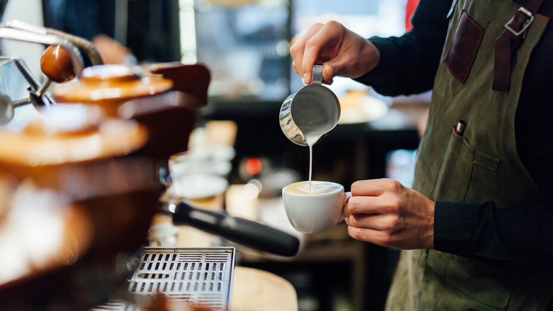
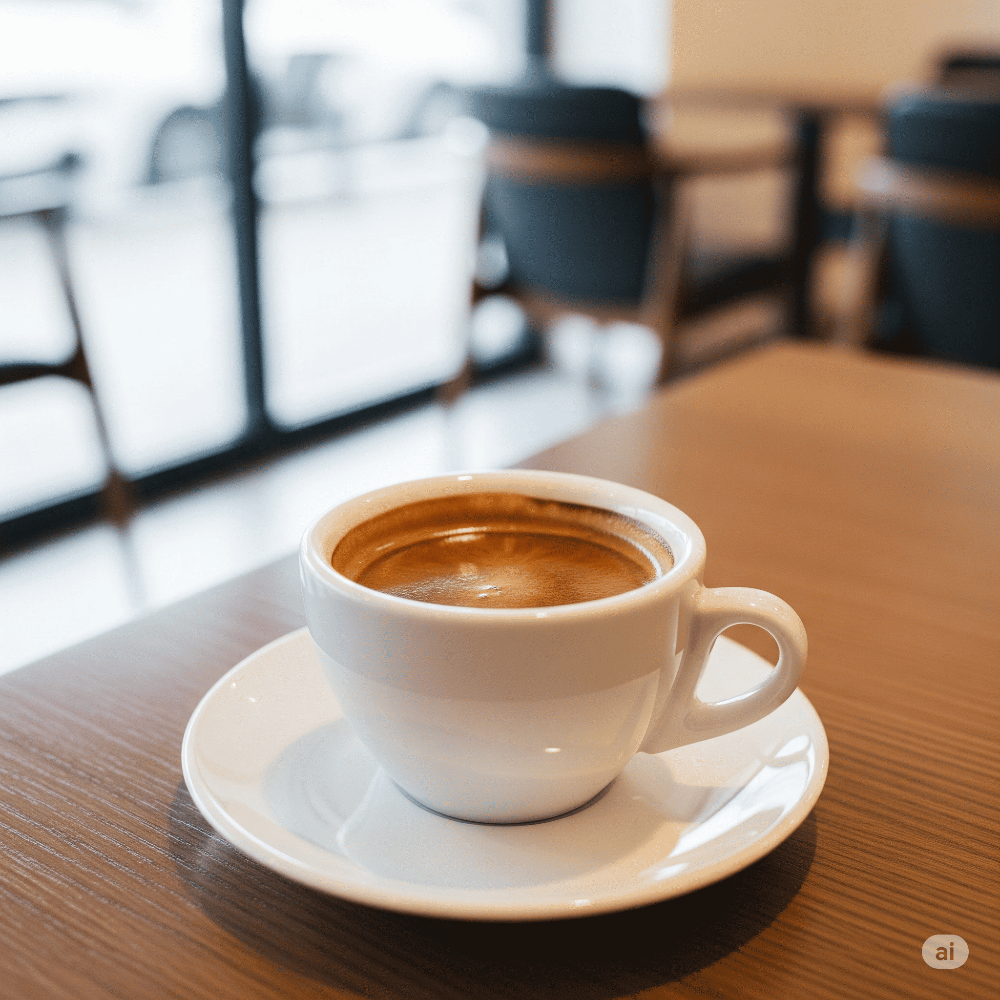
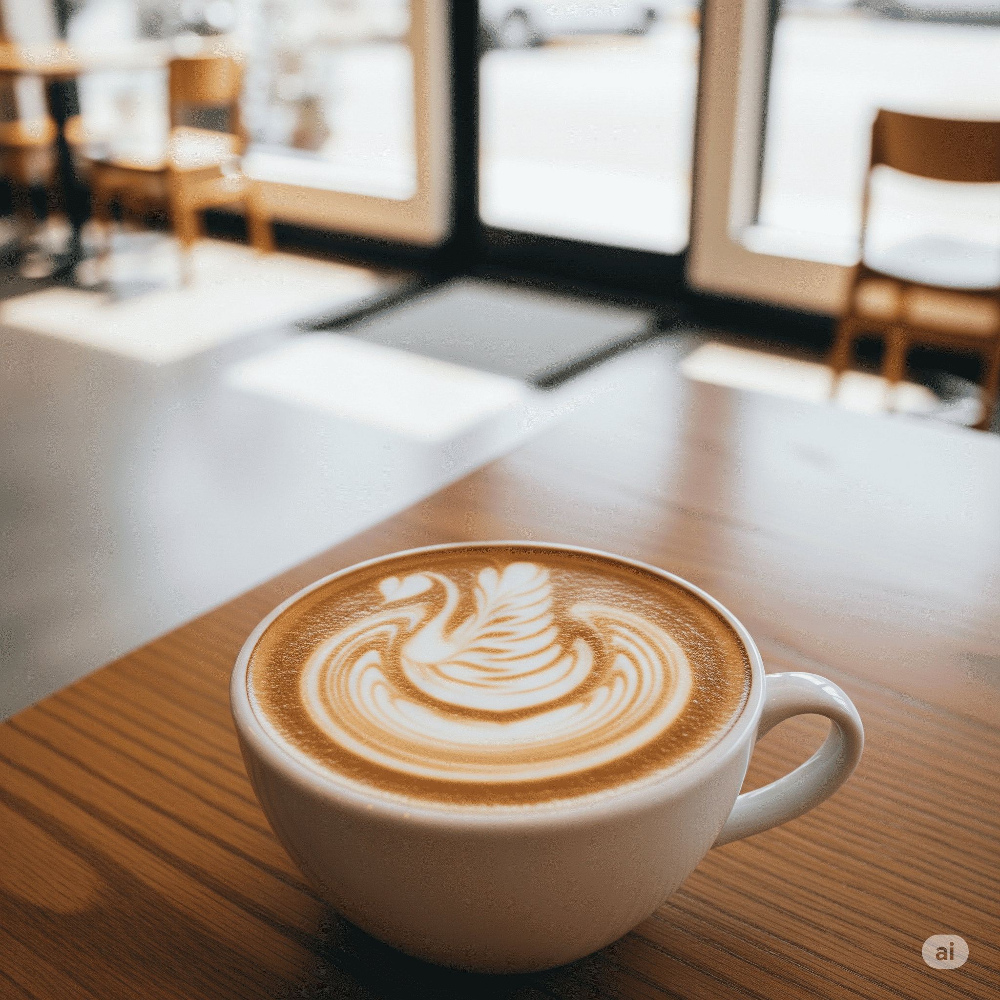
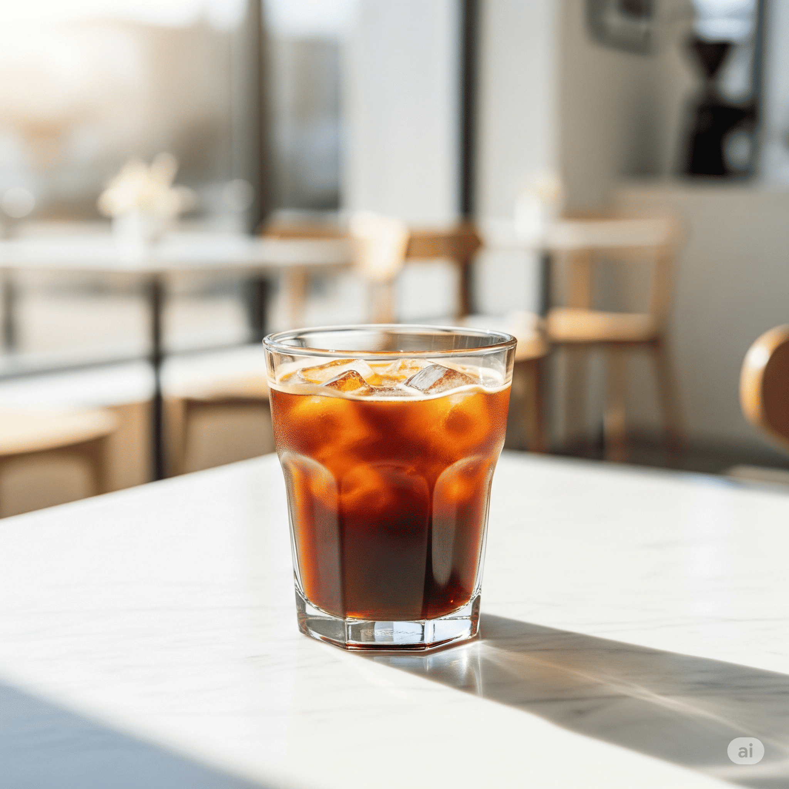
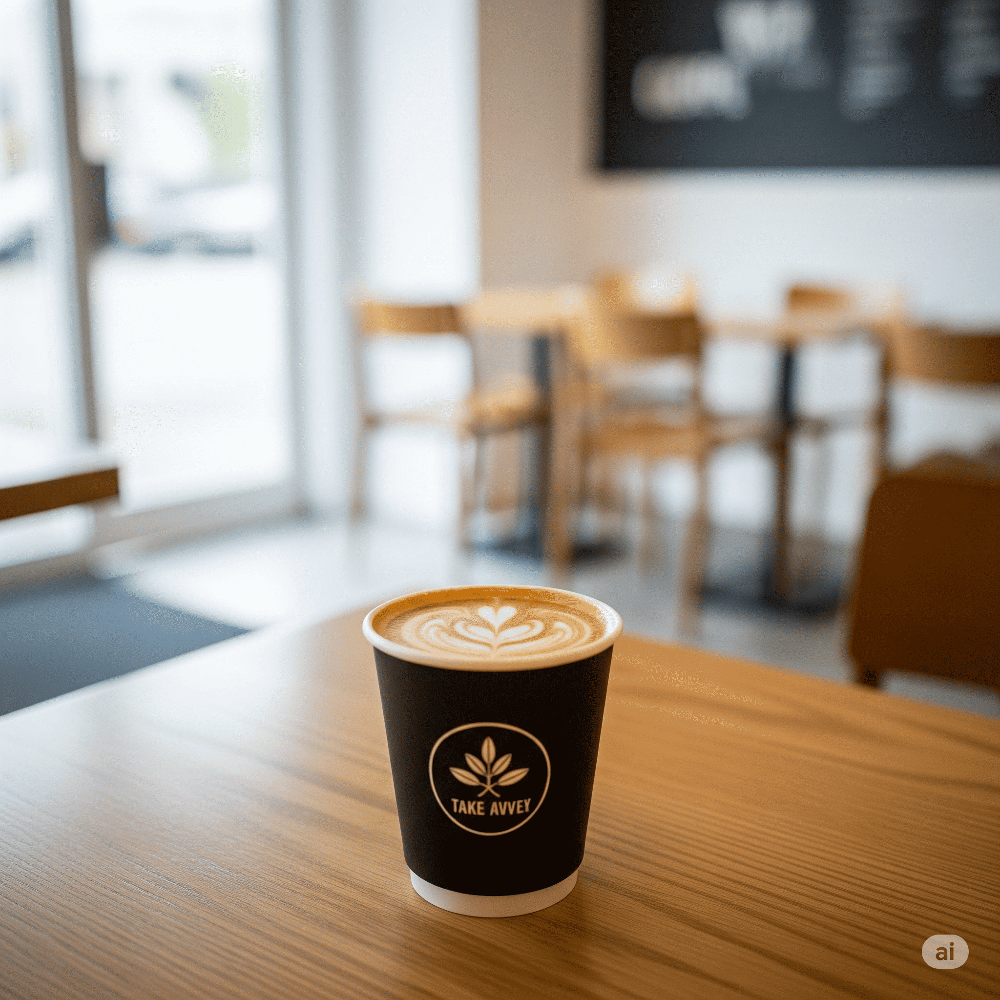
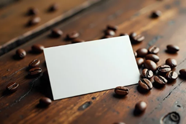

Tu Café de especialidad
“Cultivado con cuidado. Tostado con precisión. Servido con amor.”
En Café Donato, creemos que cada taza de café cuenta una historia. Desde la selección cuidadosa de los granos hasta el tueste artesanal, nuestro compromiso es ofrecerte una experiencia única y auténtica. Vení a disfrutar un espacio pensado para los amantes del café que buscan calidad, calidez y un ambiente relajado, donde el aroma y el sabor se combinan con la mejor compañía. Te esperamos en nuestro rincón en Parque Patricios para compartir juntos el placer del buen café.

Nuestras Especialidades

Espresso
Nuestro espresso concentra todo el carácter del café en una sola taza. Cuerpo profundo, aroma envolvente y un final duradero.

Latte
Café de especialidad combinado con leche vaporizada y arte en la espuma. Ideal para una pausa con estilo.

Cold Brew
Extraído en frío durante horas, el cold brew es suave, bajo en acidez y lleno de sabor. El compañero ideal para los días cálidos.

Take Away
Llevate tu café favorito y seguí disfrutando donde quieras. Mismo sabor, misma dedicación, estés donde estés.
La experiencia, en casa
Traemos hasta tu casa la misma calidad que servimos cada día en nuestra barra.
Nuestros granos provienen de fincas seleccionadas, cultivados en altura y cosechados de forma responsable, lo que garantiza una taza equilibrada, aromática y con carácter. Trabajamos con diferentes perfiles de tueste para resaltar las cualidades únicas de cada origen. Ya sea que prefieras un café suave con notas florales o uno intenso con cuerpo marcado, tenemos una opción para vos.
